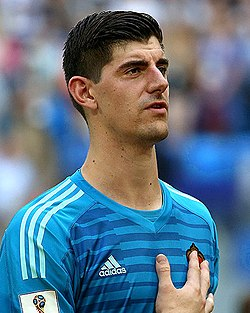
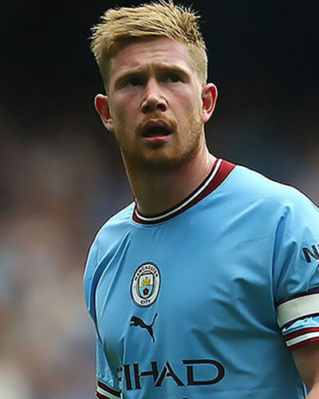
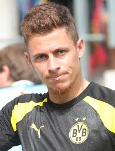
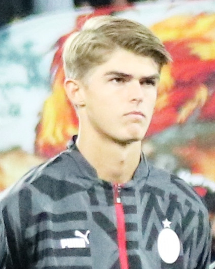
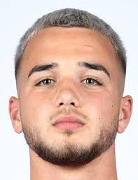
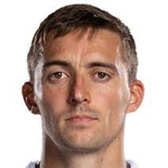
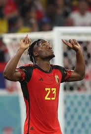
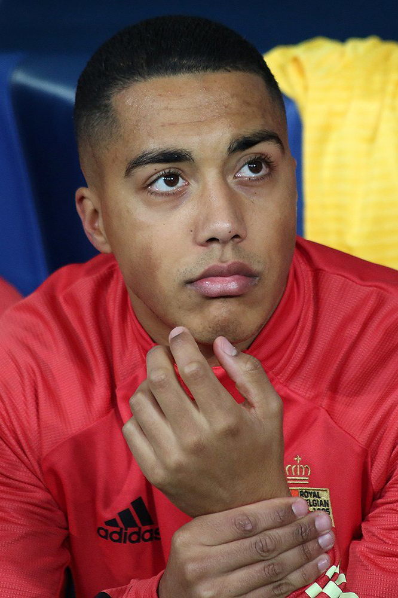
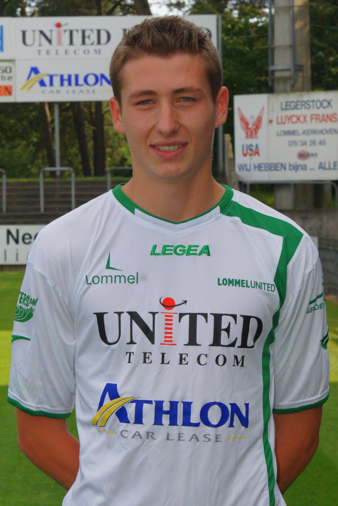

| Thibaut Courtois |
Portero |
32 |
Thibaut Courtois (n. 1992). Portero del Real Madrid; regresó al equipo nacional en 2025 tras un tiempo fuera del plantel. |
 |
| Kevin De Bruyne |
Mediocampista |
33 |
Kevin De Bruyne (n. 1991). Volante creativo y líder del equipo, con larga trayectoria en clubes top europeos. |
 |
| Romelu Lukaku |
Delantero |
31 |
Romelu Lukaku (n. 1993). Máximo goleador histórico de Bélgica; su situación física/lesión fue foco en 2025 y su disponibilidad ha variado. |
 |
| Thorgan Hazard |
Delantero / Extremo |
31 |
Thorgan Hazard (n. 1993). Extremo con experiencia internacional, habitual en las listas de Bélgica. |
 |
| Charles De Ketelaere |
Mediapunta |
24 |
Charles De Ketelaere (n. 2001). Joven mediapunta convocado en 2025, con paso por clubes europeos (Atalanta, etc.). |
 |
| Nicolas Raskin |
Mediocampista |
24 |
Nicolas Raskin (n. 2001). Volante joven que ha entrado en convocatorias recientes. |
 |
| Timothy Castagne |
Defensa / Lateral |
29 |
Timothy Castagne (n. 1995). Lateral con presencia en clubes de la Premier League y convocado en 2025 tras recuperarse de lesiones. |
 |
| Michy Batshuayi |
Delantero |
30 |
Michy Batshuayi (n. 1993). Delantero veterano con experiencia en varias ligas europeas; recibió convocatorias para la fase de clasificación 2025. |
 |
| Youri Tielemans |
Mediocampista |
28 |
Youri Tielemans (n. 1997). Mediocentro con recorrido en clubes europeos; pieza importante en el centro del campo belga. |
 |
| Hans Vanaken |
Mediapunta |
33 |
Hans Vanaken (n. 1992). Jugador con experiencia en Club Brugge y convocado ocasionalmente. |
 |